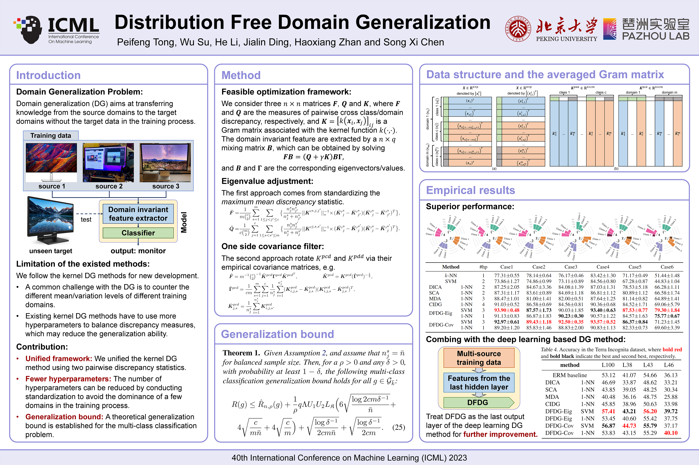
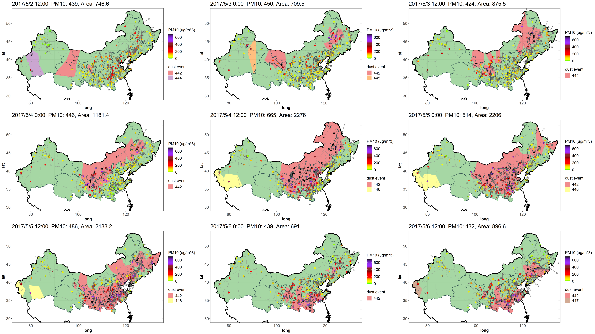
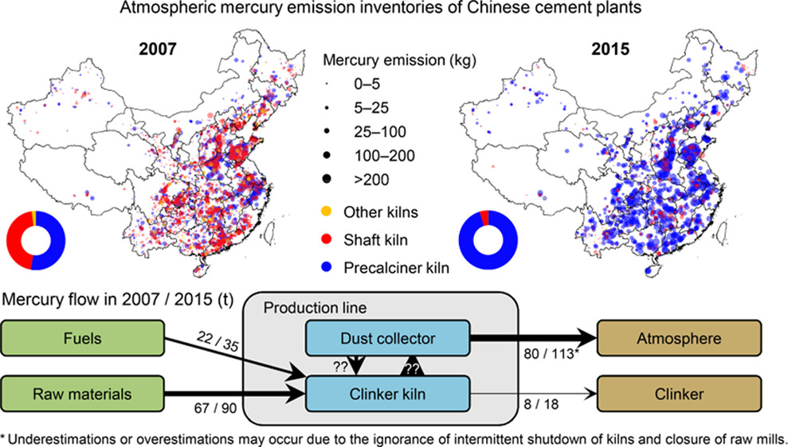
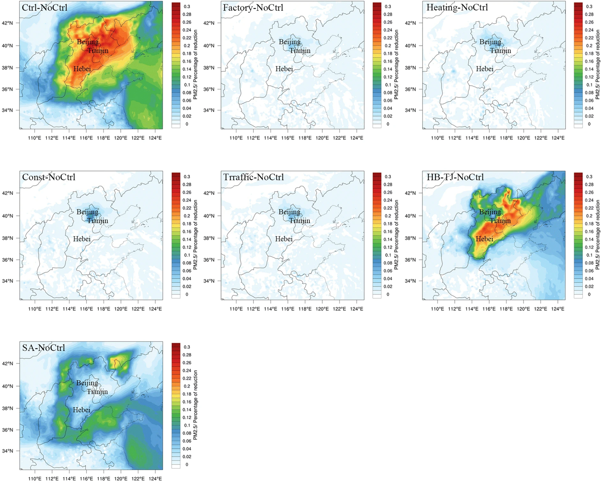
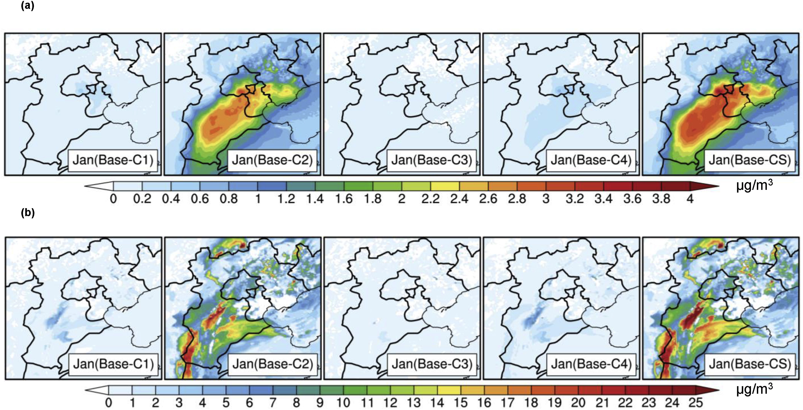

Peifeng Tong (童培峰)
Ph.D student (2020-2025)
Department of Business Statistics and Econometrics
Guanghua School of Management
100871
Peking University, Beijing
tongpf@pku.edu.cn
Biography
Peifeng Tong earned his bachelor degree in environmental science from the Peking university. He then joined the Guanghua School of Management as a PhD student fellow in the laboratory of Dr. Song Xi Chen where he pioneered the development of automated detection method for epileptiform abnormalities in electroencephalogram and dust storms in North China. His research interests include transfor learning, change-point analysis and inverse modeling.
Working paper
Tong, P. F., et al. (2023). Debiased Estimation and Inference for Spatial-Temporal Brain Source Imaging, manuscript
Tong, P. F., et al. (2023). Detection of interictal epileptiform discharges using transformer based deep neural network for patients with benign childhood epilepsy with centrotemporal spikes. manuscript
Publications

Tong, P. F.,
Zhan, H. X.,
Chen, S. X.
Ensembled Seizure Detection Based on Small Training Samples
In
IEEE Transactions on Signal Processing,
2024.
This paper proposes an interpretable ensembled seizure detection procedure using electroencephalography (EEG) data, which integrates data driven features and clinical knowledge while being robust against artifacts interference. The procedure is built on the spatially constrained independent component analysis supplemented by a knowledge enhanced sparse representation of seizure waveforms to extract seizure intensity and waveform features. Additionally, a multiple change point detection algorithm is implemented to overcome EEG signal's non-stationarity and to facilitate temporal feature aggregation. The selected features are then fed into a random forest classifier for ensembled seizure detection. Compared with existing methods, the proposed procedure has the ability to identify seizure onset periods using only a small proportion of training samples. Empirical evaluations on publicly available datasets demonstrated satisfactory and robust performance of the proposed procedure.

Tong, P. F.,
Su, W.,
Li, H.
Ding, J. L.
Zhan, H. X.
Chen, S. X.
Distribution Free Domain Generalization
In
the 40th International Conference on Machine Learning (ICML),
2023.
Accurate prediction of the out-of-distribution data is desired for a learning algorithm. In domain generalization, training data from source domains tend to have different distributions from that of the target domain, while the target data are absence in the training process. We propose a Distribution Free Domain Generalization (DFDG) procedure for classification by conducting standardization to avoid the dominance of a few domains in the training process. The essence of the DFDG is its reformulating the cross domain/class discrepancy by pairwise two sample test statistics, and equally weights their importance or the covariance structures to avoid dominant domain/class. A theoretical generalization bound is established for the multi-class classification problem. The DFDG is shown to offer a superior performance in empirical studies with fewer hyperparameters, which means faster and easier implementation.

Tong, P. F.,
Chen, S. X.,
Tang, C. Y.
Detecting and Evaluating Dust-Events in North China With Ground Air Quality Data
In
Earth and Space Science,
2021.
We propose a dust-event detection and tracking procedure based on air quality data from the ground monitoring network by detecting temporal and spatial change-points in PM10 concentration. It supplements the existing remote sensing based approach with high temporal resolution and better weather adaptivity. Applications of the procedure on the labeled data showed its having high discriminating power for dust events, pollution events, and clean periods. Our study finds changing correlation patterns between PM10 and other air pollutants at the start of the dust events, which are utilized to enhance the discriminating power of the dust-event detection procedure. The detection and tracking procedure allows the construction of transport networks of the dust-events as well as the identification of the source regions and the transportation pattern, and assess the intensity and severity of the dust-events in North China. Our analysis find the dust-events contributed to 23.3%–34.6% for PM10 and 18.2–33.2% for PM2.5 in the source regions and 2.0%–7.3% and 0.8%–4.0%, respectively, in the down-stream provinces in the spring season from 2015 to 2020.

Cai, X. R.,
Cai, B. F.,
Zhang, H. R.
Chen, L.
Zheng, C. Y.
Tong, P. F.
Lin, H. M.
Zhang, Q. R.
Liu, M. D.
Tong, Y. D.
Wang, X. J.
Establishment of High-Resolution Atmospheric Mercury Emission Inventories for Chinese Cement Plants Based on the Mass Balance Method
In
Environmental Science & Technology,
2020.
China is the world’s largest cement-related mercury emitter. Atmospheric mercury inventories for China’s cement industry are essential for appraising global mercury emissions and have been widely developed in previous studies associated with considerable uncertainties. In this study, we compiled high tempo-spatial resolution atmospheric mercury emission inventories for Chinese cement plants using the mass balance method and plant-level input–output data. The effects of industry policies were investigated based on the inventories for 2007 and 2015. Nationwide emissions increased from 80 to 113 t due to rapid expansion of production and kiln-type substitution yet partly offset by policies involving capacity structure reformation. Pollution decreased in winter in northern China, thanks to the targeting policies. Mercury input, output, and storage in cement kilns in China were estimated. The uncertainty remarkably decreased relative to previous inventories. This study demonstrates the feasibility of establishing high-resolution emission inventories with the application of the mass balance method for all the individual plants nationwide and thus has implications for similar studies. This work also improves our understanding of the spatial patterns and temporal evolution of mercury emissions in China, thus offering references for the implementation of environment policies and the Minamata Convention on Mercury in China.

Tong, P. F.,
Zhang, Q. R.,
Lin, H. M.
Jian, X. H.
Wang, X. J.
Simulation of the impact of the emergency control measures on the reduction of air pollutants: a case study of APEC blue
In
Environmental Monitoring and Assessment,
2020.
Serious air pollution motivates governments to take control measures. However, specific emission reduction effects of various temporary emission reduction policies are difficult to evaluate. During the Asia-Pacific Economic Cooperation meeting in Beijing in 2014, the Chinese government implemented a number of emergency emission control measures in the Beijing-Tianjin-Hebei area to maintain the air quality in this region. This gave us an opportunity to quantify the effectiveness of the emission reduction measures separately and identify the efficient policy combinations for the reduction of major pollutants. In this study, we evaluated the impacts of specific emission reduction measures on the concentrations of two major air pollutants (PM2.5 and O3) under eight policy scenarios using the Weather Research and Forecasting model coupled with Chemistry (WRF-Chem). Comparing these scenarios, we found that the control policies against the primary PM2.5 emission achieved the most significant results. Meanwhile, all the emission control measures raised the ozone concentrations in different degrees, which might be partly attributed to the changes of PM2.5 concentration and the ratio of NOx and VOCs caused by the emission control measures. Our results suggest that, in VOC-sensitive areas like Beijing, emergency control measures focusing on primary PM2.5 emission could lead to significant PM2.5 reduction and relatively small ozone increase, and should be considered as a priority policy. Joint emission control at the regional scale is also important especially under unfavorable meteorological conditions.

Zhang, Q. R.,
Tong, P. F.,
Liu, M. D.
Lin, H. M.
Yun, X.
Zhang, H. R.
Tao, W.
Liu, J. F.
Wang, S. X.
Tao, S.
Wang, X. J.
A WRF-Chem model-based future vehicle emission control policy simulation and assessment for the Beijing-Tianjin-Hebei region, China
In
Journal of Environmental Management,
2020.
Using 2025 as the target year, we quantitatively assessed the reduction potentials of emissions of primary pollutants (including CO, HC, NOx, PM2.5 and PM10) under different vehicle control policies and the impacts of vehicle emission control policies in the BTH region on the regional PM2.5 concentration in winter and the surface ozone (O3) concentration in summer. Comparing the different scenarios, we found that (1) vehicle control policies will bring significant reductions in the emissions of primary pollutants. Among the individual policies, upgrading new vehicle emission standards and fuel quality in Beijing, Tianjin, and Hebei will be the most effective policy, with emission reductions of primary pollutants of 26.3%–54.7%, 38.0%–70.3% and 46.0%–81.6% in 2025, respectively; (2) for PM2.5 in winter, the Combined Scenario (CS) will lead to a reduction of 0.5–3.9μgm−3 (3.5%–11.6%) for the monthly average PM2.5 concentrations in most areas. The monthly nitrate and ammonium concentrations would reduce by 5.8% and 5.3%, respectively, in the whole BTH region, indicating that vehicle emission control policies may play an important role in the reduction of PM2.5 concentrations in winter, especially for nitrate aerosols; and (3) for O3 concentrations in summer, vehicle emission control policies will lead to significant decreases. Under the CS scenario, the maximum reduction of monthly average O3 concentrations in the summer is approximately 3.6ppb (5.9%). Most areas in the BTH region have a decrease of 15ppb (7.5%) in peak values compared to the base scenario. However, in some VOC-sensitive areas in the BTH region, such as the southern urban areas, significant reductions in NOx may lead to increases in ozone concentrations. Our results highlight that season- and location-specific vehicle emission control measures are needed to alleviate ambient PM2.5 and O3 pollution effectively in this region due to the complex meteorological conditions and atmospheric chemical reactions.
{kind=link}